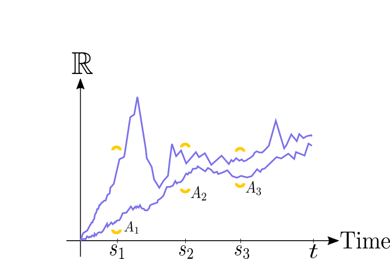

|
Aditya Bhardwaj I'm a fourth-year physics undergrad at the University of Chicago advised by David Schuster and Zac Manchester. |
{kind=link}
Papers |

|
Direct Collocation for Quantum Optimal Control
Aaron Trowbridge, Aditya Bhardwaj, Kevin He, David Schuster, Zachary Manchester IEEE International Conference on Quantum Computing and Engineering, 2023 Best Paper Award, Technologies and Systems Engineering Track (2nd Place) arXiv / slides / github Padé Integration Collocation (PICO) formulates the quantum optimal control problem as a nonlinear program capable of enforcing constraints on both the controls and the wavefunction and achieves state-of-the-art fidelity results in our 3D superconducting circuit cavity quantum electrodynamics system. |
|

|
The Imaginary-Time Feynman Path Integral
Aditya Bhardwaj The University of Chicago Mathematics REU, 2021 paper Construction of the $n$-dimensional Wiener measure and an introduction to operator semigroups leads to a proof of a Feynman-Kac formula connecting the idea of integration of over a space of paths to the heat semigroup. |
|
Inspired by Jon Barron and Taylor Howell's websites. |